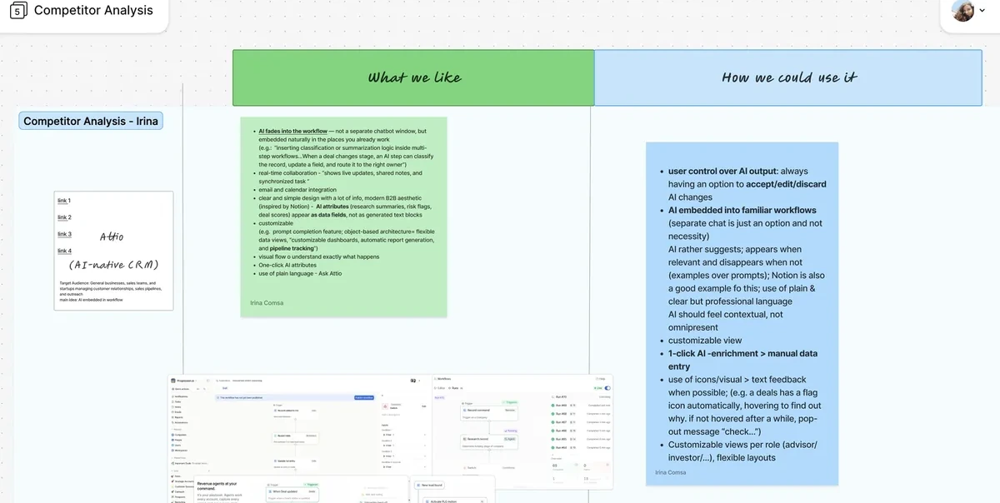

Fintalo Redesigning an AI-powered platform for the full M&A deal lifecycle
- Context
- Client project for Fintalo
- Year
- 2026
- Duration
- 3 months
- Team
- TUDesign student club
- Client requirements
- Methods
- Tools
What I Did
- Redesigned the AI-native M&A deal management platform Fintalo together with my team from the TUDesign student club
- Conducted a competitor analysis of AI-native CRM tools to define principles for how AI should surface within the product
- Iterated the design across several structured feedback rounds with the Fintalo team
The Challenge
M&A advisors manage complex, multi-stage deals that move from pitching through closing, often spread across email, spreadsheets and disconnected tools. Fintalo needed an interface that could hold all of this activity clearly, and that introduced AI support in a way that felt integrated rather than like a separate chatbot.
The Solution
We structured the platform around the Dashboard, Cockpit, Documents, Investors, Tasks and Outreach screens, giving advisors a clear, stage-based way to navigate each deal. AI surfaces contextually within these views through suggestions, one-click enrichment and accept, edit or discard controls, supporting advisors without demanding their attention.

